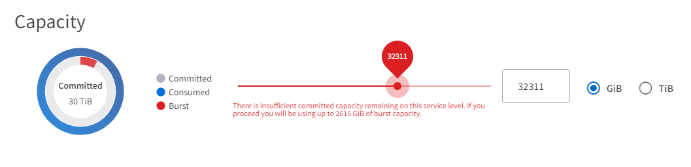
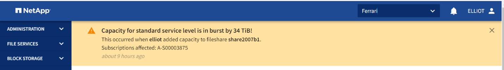
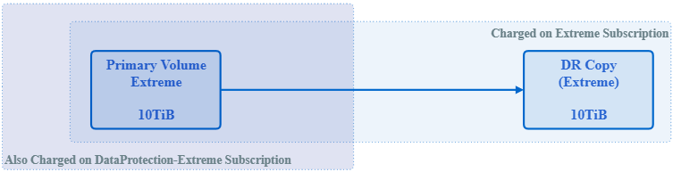
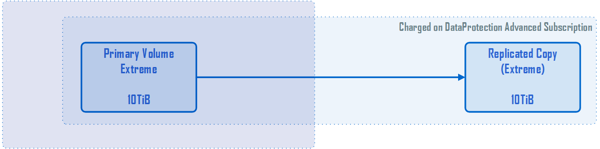
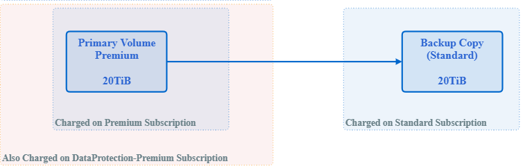

Demander de modifier un document
Demander de modifier un document Modifier sur GitHub
Modifier sur GitHub Guide des contributeurs
Guide des contributeursComptes de facturation, abonnements, services et performances
Un service de stockage d’abonnement est facturé sur un compte de facturation. Chaque compte de facturation est lié à un locataire. Un compte de facturation peut être facturé pour un ou plusieurs abonnements.
Un abonnement fait référence à un groupe de services de stockage auquel vous êtes abonné et facturés en tant que package unique. Un abonnement :
-
Possède un ou plusieurs services de stockage
-
A une durée déterminée avec une date de fin d’abonnement
-
Des modules complémentaires peuvent être associés à l’abonnement

|
Si le stockage est requis dans plusieurs data centers, un abonnement distinct est requis pour chaque data Center, avec des engagements distincts. |
Un service de stockage est une capacité de stockage souscrite à l’engagement, avec un niveau de performances associé. NetApp Service Engine propose un stockage de fichiers et de blocs à des niveaux de service très élevés, Premium, Premium et de performance standard, ainsi qu’un stockage objet au niveau des services de performance des objets.
Les niveaux extrêmes de Tiering et de performance du Tiering vous permettent de réduire l’empreinte du stockage et les coûts associés grâce à la surveillance et au Tiering des données inactives vers des tiers de stockage objet plus économiques. La règle de Tiering est définie sur automatique, où les données inactives pendant 31 jours sont hiérarchisées par défaut. Vous pouvez modifier cette période pour être un nombre de jours de 3 à 61 jours.
Lors de leur création, les éléments de stockage de fichiers et de blocs sont associés à un niveau de performances. Le déplacement des charges de travail entre les niveaux de service de performances est possible en fonction de l’évolution des besoins. Les niveaux de performances standard, premium et haut de gamme offrent différents niveaux d’IOPS et de débit (Mbit/s) afin que le stockage puisse être adapté aux besoins de l’entreprise.
L’utilisation en rafale est autorisée sur les services jusqu’à un certain point ; elle est contrôlée et facturée à des tarifs distincts (tels que définis dans l’abonnement). Pour plus d’informations sur la capacité et l’utilisation, voir "Consommation, capacité en rafale et utilisation excessive". Des services DP qui prennent en charge les sauvegardes et la reprise après incident sont également proposés.
Consommation, capacité en rafale et utilisation excessive
La capacité consommée est la capacité allouée (mais pas nécessairement utilisée). La capacité engagée est la capacité à laquelle s’engage un abonnement. L’abonné est facturé à taux fixe pour la capacité engagée, indépendamment de la quantité utilisée.
La capacité en rafale correspond à la capacité allouée supérieure.
Capacité en rafale = capacité consommée : capacité dédiée
NetApp Service Engine surveille la capacité consommée, vérifie l’utilisation par rapport à l’abonnement et facture la capacité consommée au taux de bursting spécifié dans l’abonnement. L’utilisation est saisie par incréments de cinq minutes et un résumé quotidien est envoyé au moteur de facturation pour le calcul des frais de rafale. (Le temps de facturation est basé sur l’heure locale de l’infrastructure sous-jacente à l’installation du moteur de services NetApp. )
|
|
Outre le stockage primaire, des fonctionnalités telles que les snapshots, la sauvegarde et les réplicas de reprise d’activité contribuent et sont incluses dans les calculs d’utilisation. |
Notifications d’utilisation en rafale
À mesure que la demande en rafale génère des coûts supplémentaires, l’interface graphique du moteur de service NetApp affiche :
-
Une notification lorsqu’un changement de provisionnement est proposé entraîne l’utilisation de la capacité en rafale.
-
Notification à un administrateur client lorsqu’un abonnement est passé en mode rafale.
-
Le nombre de jours et la quantité d’utilisation en rafale ont été utilisés pour un service, dans le rapport sur la capacité. Pour plus d’informations, voir "Utilisation de la capacité".
Notification lorsqu’une modification proposée entraîne une utilisation de la capacité en rafale
Cette figure présente un exemple de notification qui s’affiche lorsqu’une modification de provisionnement proposée provoque l’éclatement d’un abonnement. Vous pouvez choisir de continuer à savoir qu’il mettra l’abonnement en rafale ou de ne pas poursuivre l’action.

Le tableau suivant répertorie les cas où de telles notifications de rafale sont affichées.
| Action | Impact à la source | Impact à destination |
|---|---|---|
Créer ou redimensionner un partage/disque. |
Dépasse l’engagement sur le niveau de service dans la zone. |
s/o |
Déplacer un partage/disque vers un nouveau niveau de service. |
Dépasse l’engagement sur le niveau de service dans la zone. |
s/o |
Créez ou redimensionnez un partage/disque sur un serveur de fichiers/magasin de blocs lorsque la reprise après incident est activée. |
|
Dépasse l’engagement sur le niveau de service dans la zone de destination par le partage/disque de destination créé automatiquement. |
Déplacez un partage/disque vers un nouveau niveau de service sur un serveur de fichiers/magasin de blocs lorsque la reprise après incident est activée. |
|
Dépasse l’engagement sur le niveau de service dans la zone de destination par le partage/disque de destination déplacé. |
Activer les sauvegardes sur un partage/disque. |
Dépasse l’engagement de la DP. |
Dépasse l’engagement sur le niveau de service dans la zone de destination par le partage/disque de destination créé automatiquement. |
Créer une nouvelle location de magasin d’objets. |
L’engagement pour la capacité d’objet peut être dépassé. |
s/o |
Augmenter le quota sur la location d’un magasin d’objets |
L’engagement pour la capacité d’objet peut être dépassé. |
s/o |
Notification lorsque l’abonnement est en rafale
La bannière de notification suivante s’affiche lorsqu’un abonnement est en rafale. La notification s’affiche à l’administrateur du client pour la location et s’affiche jusqu’à ce que la notification soit acquittée.

Protection des données
DP désigne les méthodes permettant de sauvegarder des données et de les restaurer si nécessaire.
Les fonctionnalités de NetApp Service Engine DP comprennent :
-
Snapshots de disques et partages
-
Sauvegardes de disques et partages (service DP requis dans le cadre de l’abonnement)
-
Reprise sur incident pour les disques et les partages (requiert le service DP ou DP Advanced dans le cadre de l’abonnement)
Snapshots
Les snapshots sont des copies de données à un point dans le temps. Les snapshots peuvent être clonés pour former un nouveau disque ou partagés avec des fonctionnalités identiques ou similaires.
Les snapshots peuvent être créés de manière ponctuelle ou automatiquement selon un planning, tel que défini dans une stratégie de snapshot. La règle Snapshot détermine quand les snapshots sont capturés et la durée de leur conservation.
|
|
Les snapshots contribuent à la capacité consommée d’un service. |
Sauvegardes
La sauvegarde consiste à créer une copie d’un élément, à le répliquer et à stocker la copie dans une zone autre que la zone d’origine, où le protocole respectif est activé (en cas de stockage en mode bloc uniquement) et non MetroCluster est activé. NetApp Service Engine propose des sauvegardes sur le stockage bloc et fichier (un service DP est requis dans l’abonnement). Les sauvegardes des partages/disques sont stockées dans la zone de sauvegarde sur le niveau de performance le plus économique (standard) à l’abonnement.
Les sauvegardes peuvent être configurées au moment de la création d’un nouveau partage/disque ou ultérieurement ajoutées à un partage/disque existant.
Notes:
-
Les sauvegardes se produisent à un temps fixe, environ 0:00 UTC.
-
Les sauvegardes sont effectuées comme défini par le jeu de règles de sauvegarde pour le partage/disque. La règle de sauvegarde détermine :
-
Si les sauvegardes sont activées
-
Zone à laquelle les sauvegardes sont répliquées ; zone de sauvegarde correspond à toute zone du moteur de services NetApp autre que la zone dans laquelle le partage ou le disque d’origine réside, dont le protocole respectif est activé (dans le cas du stockage en mode bloc uniquement) et non MetroCluster est activé. Une fois définie, la zone de sauvegarde ne peut pas être modifiée.
-
Le nombre de sauvegardes à conserver (conservation) de chaque intervalle (quotidien, hebdomadaire ou mensuel).
Les sauvegardes planifiées sont régulièrement effectuées et ne peuvent pas être supprimées, mais elles seront retirées conformément à la stratégie de conservation.
-
-
La réplication des sauvegardes est effectuée tous les jours.
-
Les sauvegardes de disques ou de partages ne peuvent pas être configurées dans une instance NetApp Service Engine qui ne contient qu’une seule zone.
-
La suppression d’un partage ou d’un disque principal supprimera toutes les sauvegardes associées.
-
Les sauvegardes contribuent à la capacité totale consommée. En outre, les sauvegardes peuvent être coûteuses au tarif de l’abonnement DP. Voir aussi "Protection des données, capacité consommée et frais".
-
Restaurer à partir de la sauvegarde : demande de service pour restaurer un partage ou un disque à partir de la sauvegarde.
Reprise après incident
La reprise après incident consiste à restaurer la normale des opérations en cas d’incident.
NetApp Service Engine prend en charge deux formes de reprise après incident : asynchrone et synchrone.
|
|
La prise en charge de la reprise après incident dépend de l’infrastructure prise en charge par l’instance du moteur de service NetApp. |
Reprise après incident—asynchrone
NetApp Service Engine prend en charge la reprise après incident asynchrone en vous permettant d’atteindre les objectifs suivants :
-
Réplication asynchrone de volumes primaires vers une zone de reprise d’activité
-
Basculement/retour arrière (disponible uniquement sur demande de service)
La reprise après incident asynchrone est disponible pour le stockage de fichiers et blocs et requiert un service DP dans l’abonnement.
La zone de reprise sur incident doit être une zone au sein du moteur de services NetApp différente de la zone dans laquelle le volume primaire est créé et ne doit pas être un partenaire MetroCluster si la zone source est activée par MetroCluster. Les répliques de reprise après incident des partages/disques sont stockées dans la zone de reprise après incident au même niveau de performance que le partage/disque d’origine.
L’activation de la réplication asynchrone de reprise après incident pour un volume primaire nécessite :
-
Configuration du serveur de fichiers ou du magasin en blocs sur lequel réside le volume pour prendre en charge la reprise après incident.
-
Activation ou désactivation de la réplication de reprise après incident du partage de fichiers ou du disque. Par défaut, les partages et les disques sont activés pour la réplication de reprise après incident, si la reprise après incident est configurée.
Configurez un serveur de fichiers ou un magasin en blocs pour prendre en charge la reprise après incident asynchrone
Activez la reprise après incident asynchrone sur un serveur de fichiers ou un magasin bloc au moment de la création ou ultérieurement. Une fois activée, la reprise après incident ne peut pas être désactivée et la zone de reprise après incident ne peut pas être modifiée. La planification de la reprise sur incident spécifie la fréquence à laquelle les données sont répliquées vers le site de reprise sur incident (toutes les heures, toutes les heures ou tous les jours).
Reprise après incident asynchrone sur le partage de fichiers ou le disque
Un partage de fichiers ou un disque ne peut être configuré que pour la réplication asynchrone de reprise après incident si le serveur de fichiers parent ou le magasin de blocs est d’abord configuré pour la reprise après incident asynchrone. Par défaut, si la réplication est activée dans le parent, la réplication est activée dans les partages de fichiers ou les disques que le parent héberge. Vous pouvez exclure la réplication d’un partage ou d’un disque particulier en désactivant la reprise après sinistre sur ce partage/disque. Il est possible de basculer entre l’activation et la désactivation de la réplication sur ces partages/disques.
Notes:
-
La suppression d’un serveur de fichiers principal ou d’un stockage en blocs entraîne la suppression de toutes les copies répliquées de reprise après incident.
-
Une seule zone de reprise après sinistre peut être configurée par serveur de fichiers ou magasin de blocs.
-
Les copies de reprise après incident contribuent à la capacité totale consommée. En outre, la reprise après incident coûte cher au tarif d’abonnement à la reprise après incident. Voir aussi "Protection des données, capacité consommée et frais".
Reprise après incident synchrone
MetroCluster est une fonctionnalité DP qui réplique de manière synchrone les données et la configuration entre deux zones distinctes qui résident dans des emplacements distincts ou dans des domaines de défaillance. En cas d’incident sur un site, un administrateur peut permettre l’accès aux données à partir du site survivant.
Les sites gérés par le moteur de services NetApp configurés avec MetroCluster peuvent prendre en charge la reprise après incident synchrone pour le stockage en mode bloc et fichier de la manière suivante.
-
Les zones peuvent être configurées pour prendre en charge la reprise après incident synchrone.
-
Les disques/partages créés dans ces zones répliquent de manière synchrone leurs données sur la zone de reprise après incident.
Notes:
-
La reprise d’activité synchrone génère des coûts à un taux d’abonnement à la reprise après incident synchrone. Voir aussi "Protection des données, capacité consommée et frais".
La protection des données, la capacité consommée et les frais
Les chiffres de cette section décrivent le calcul des frais DP.
Reprise après incident
Reprise après incident asynchrone
Dans le cas de la reprise après incident asynchrone, l’utilisation et le coût sont constitués des frais suivants :
-
La capacité du volume d’origine est chargée sur le Tier de performance sur lequel elle réside.
-
Copie de reprise après incident chargée au même niveau de performances au niveau de la destination ou de la zone de reprise après incident (les copies de reprise après incident sont stockées au même niveau).
-
Frais de service DP (pour la capacité du volume d’origine).

Reprise sur incident synchrone
Dans le cas de la reprise après incident synchrone, l’utilisation et le coût sont constitués des frais suivants :

Sauvegarde
En sauvegarde, l’utilisation et le coût sont constitués des frais suivants :
-
La capacité du volume d’origine est chargée sur le Tier de performance sur lequel elle réside.
-
Les volumes de sauvegarde sont facturés au niveau de performance le plus bas disponible (les copies de sauvegarde sont stockées dans le Tier le plus économique possible).
-
Frais de service DP (pour la capacité du volume d’origine).
